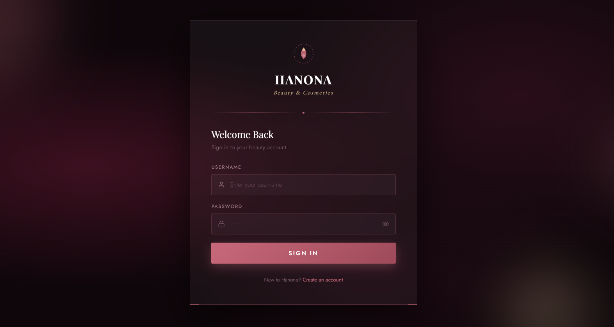
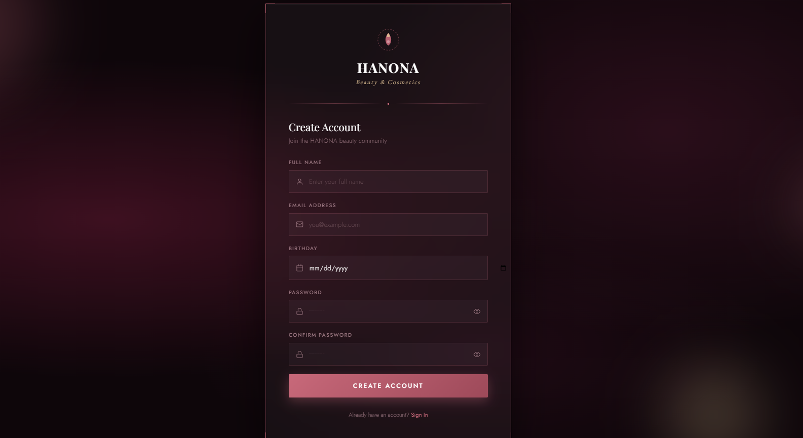
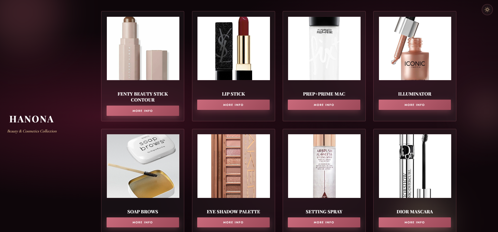
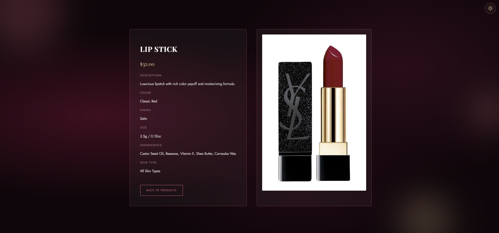
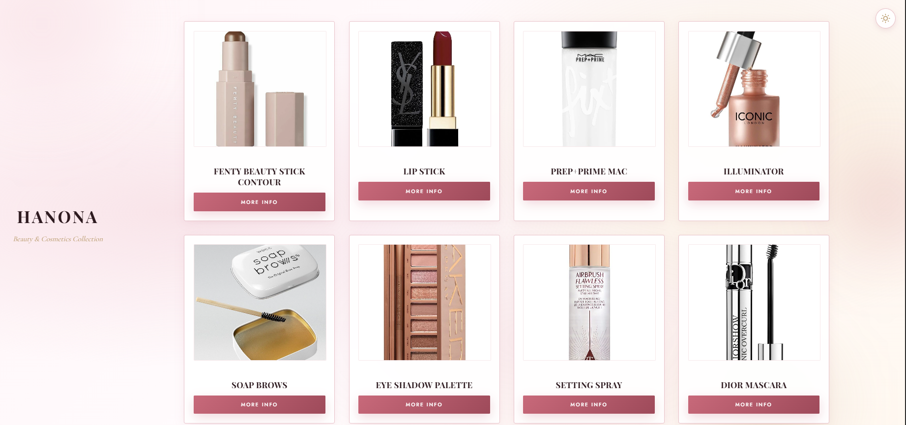
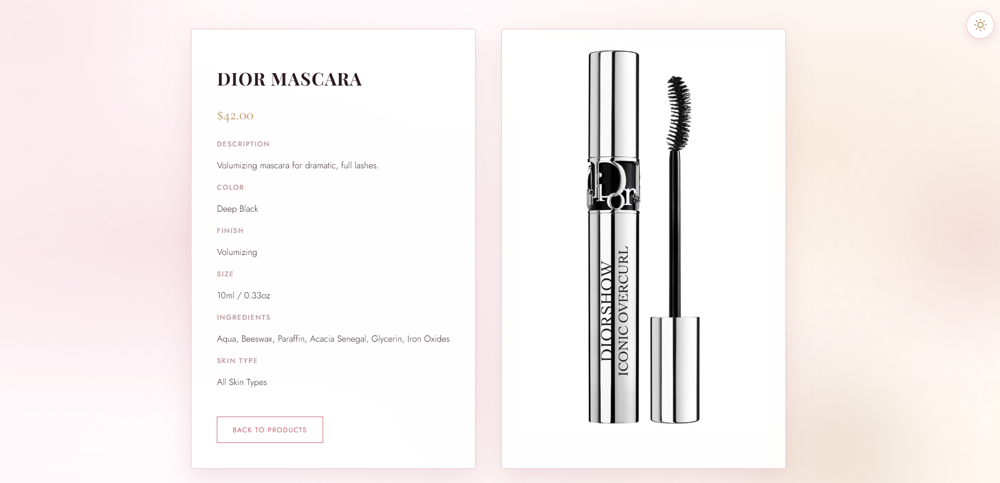

A beauty and cosmetics catalogue prototype — no framework, no backend, no build step. Just HTML, CSS, and vanilla JavaScript doing real work.

Register, Login, Products, and Info each live in their own folder as a plain HTML page with a page-specific script. A single Shared/utils.js loads before every page script and exposes validation, theme, and product helpers — plus the static productsData array — to the global scope. No modules, no bundler, no package manager: load order does the job a framework usually would.
Registered accounts live in localStorage under HANONA_users; the active session lives separately in sessionStorage as HANONA_currentUser, so closing the tab ends the session without deleting the account. A one-day cookie carries the selected product between the catalogue and its detail page.


The registration form checks name, email format, minimum age of 13 from date of birth, password length, password confirmation, and duplicate email against existing accounts before a new user object is appended to storage — all in plain JavaScript, no server round-trip.
Products and Info both check for a session user before rendering anything, redirecting unauthenticated visitors straight to Login. It's a front-end-only gate — there's no server to enforce it — but it shapes the real user flow: register, sign in, then browse.


Choosing "More Info" saves the selected product in a cookie and navigates to Info.html?id=<product-id>. The details page reads the cookie first and falls back to the URL's id parameter — so a direct link still works even without the cookie.
A floating toggle switches between DarkMood.css and LightMood.css, persisting the choice in localStorage so it holds across every page — login, registration, catalogue, and detail — without a flash of the wrong theme on load.

Playfair Display, Cormorant Garamond, and Jost from Google Fonts carry the beauty-editorial tone, paired with glass-like cards, soft gradients, and CSS variables driving both themes from the same markup — no per-page style duplication.
This is a front-end demonstration: passwords and user details sit in plaintext in browser storage, the catalogue is static data, and there's no cart, backend, or database. A logout helper exists in the shared script but isn't wired to a control yet — the kind of honest, unfinished edge real projects have.